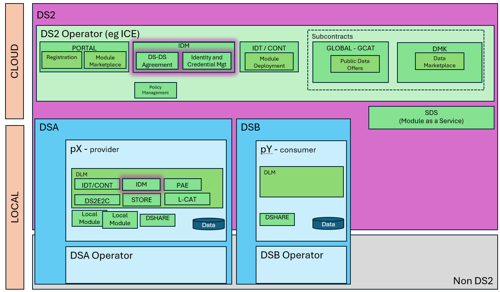
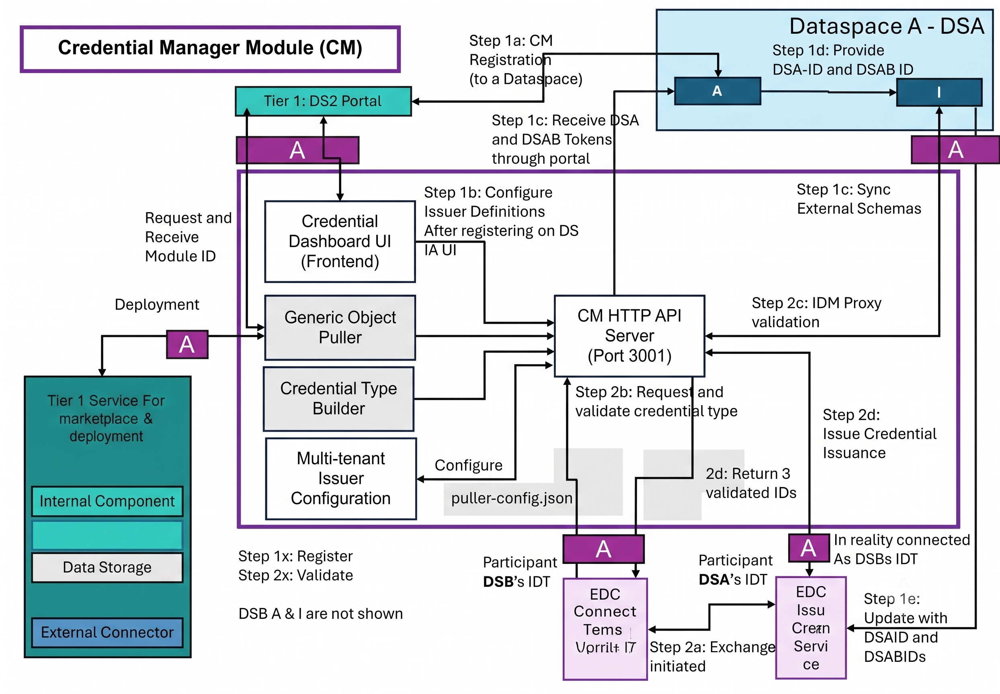
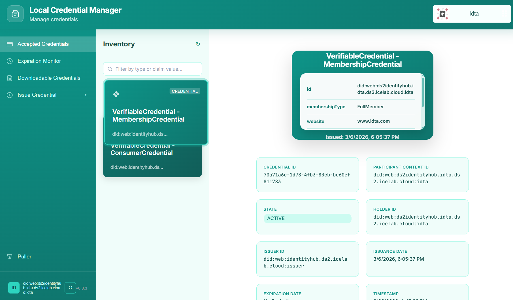
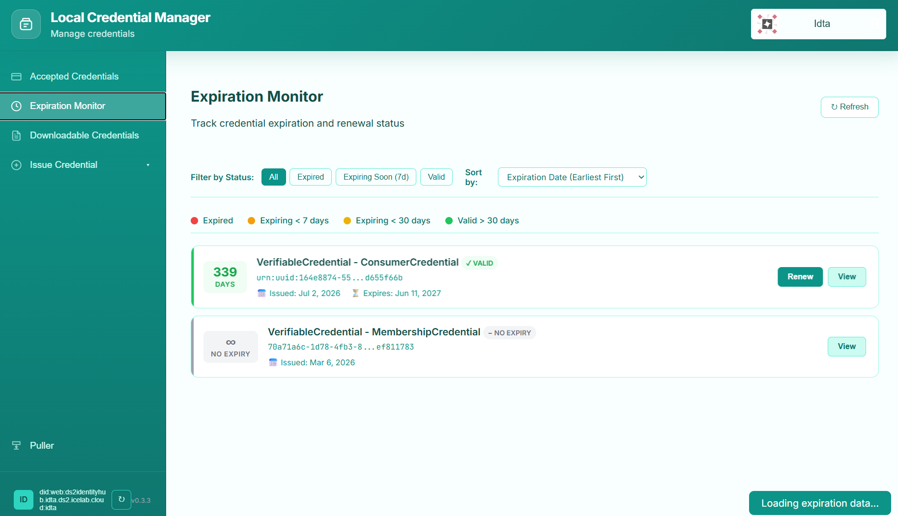
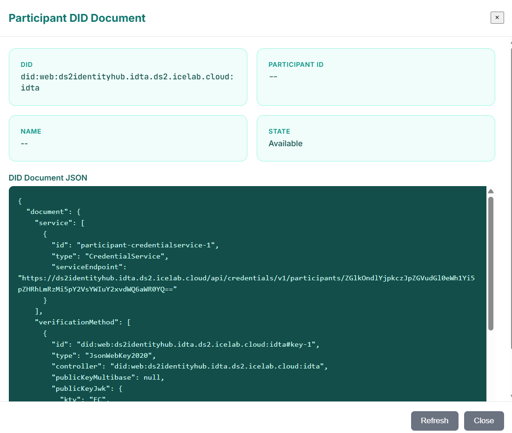
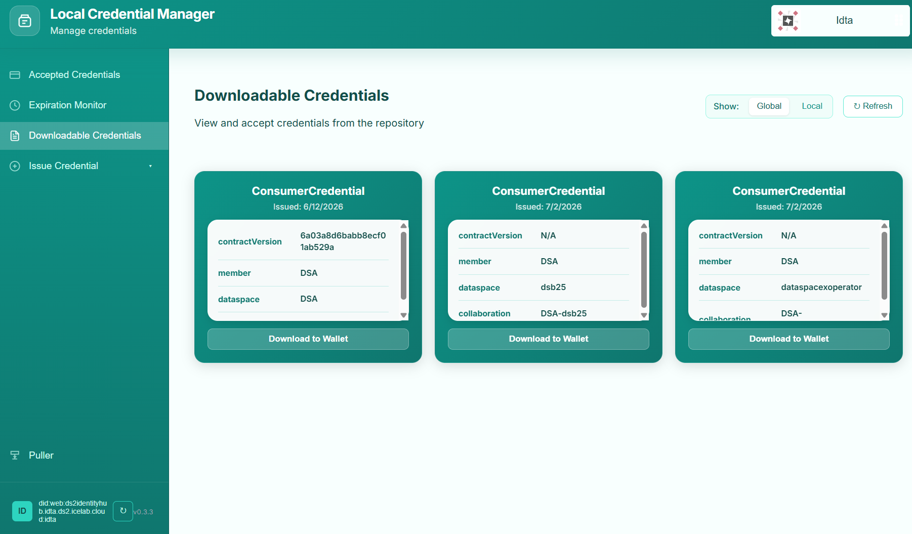
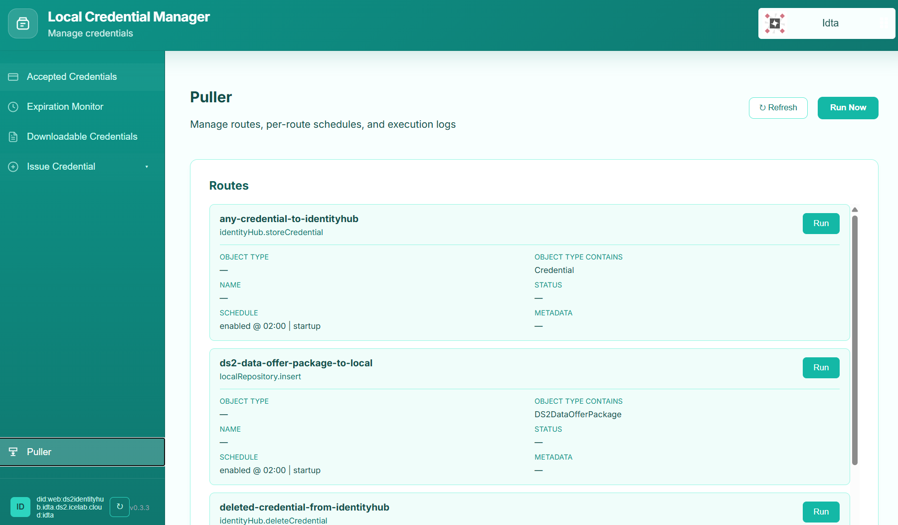

LIDM - Credential Manager
Powered by

| Project Links |
|---|
| Software GitHub Repository https://github.com/ds2-eu/credentialmanager |
| Progress GitHub Project https://github.com/orgs/ds2-eu/projects/8 |
General Description
The DS2 Credential Manager is a connector-edge module that provides a lightweight, operator-friendly control plane for managing Verifiable Credentials (VCs), Decentralized Identifiers (DIDs) and Verifiable Credential Definitions on a per-connector basis. It is designed to run alongside an Eclipse Dataspace Connector (EDC), acting as a local management surface for IdentityHub participants, credential issuance definitions, the generic object puller, and the synchronization of repository objects into the wallet.
The module ships as part of the DS2 Identity Manager (IDM) foundation stack. It is now decoupled as a standalone DS2 module so that connector operators can deploy a single, tightly-scoped service next to their EDC that owns all credential and participant concerns without depending on a global portal. The Credential Manager keeps the wallet, the issuer, and the puller in one place and exposes them as a self-contained REST API plus dashboard.
Key capabilities include:
- IdentityHub Participant Management — create, register, publish and inspect connector participants and their DIDs directly against the EDC IdentityHub.
- Verifiable Credential Lifecycle — list, inspect, store, delete and revoke VCs that live in the connector's IdentityHub wallet.
- Issuer Orchestration — coordinate the EDC IssuerService Admin API (credential definitions, attestations) and the global IDM signing endpoint, including fully-decentralized
did:keyself-issuance. - Generic Object Puller — automated, route-based ingestion of repository objects (credentials, dataspace agreements, packages) into the IdentityHub, a local repository, or an external webhook. Includes scheduled jobs and on-demand execution.
- Downloadable Credentials Flow — review pending agreements and deliverables assigned to the connector in the global DS2 Repository, accept them and watch them flow into the wallet. A local repository mirrors delivered objects for offline/audit use.
- Requestable Credentials (peer credentials) — when enabled, surface DS2 dataspace peer credentials (membership, agreement, acquisition) via the same flows exposed by the IDM portal.
- Local Dashboard UI — a modern web interface served by the same process provides visual access to everything above (wallet, expiration monitor, puller admin, issuer configuration, DID documents, policies).
The module aligns with W3C Verifiable Credentials Data Model 1.0/1.1, supports VC1_0_JWT and VC1_0_LD formats, and is fully containerised (Docker image + Helm chart for the DS2 Containerisation stack).
Architecture
The figure below represents the module fit into the DS-DS environment.

The figure below represents the actors, internal structure, primary sub-components, primary DS2 module interfaces, and primary other interfaces of the module.

Component Definition
The Credential Manager is a single Node.js/Express HTTP service exposed on port 3001. It is composed of the following internal sub-components:
- HTTP API: Express application that owns the entire REST surface. It implements signing for self-issued credentials, JWT helpers, dynamic URL resolution (from JWT-extracted
organizationUrl), and ties together all sub-components.- Integrates with the EDC IdentityHub Identity API (
/v1alpha/participants/...), the IdentityHub Credentials API, and the optional IssuerService Admin API. - Connects to the global DS2 Repository API and to an optional local Repository mirror (for IDTA deliveries).
- Falls back to the global IDM signing endpoint (
/idm-api/credentials/signand/sign-custom) for synchronous credential signing whenIDM_ENABLED=true. - Exposes Endpoints for Config, Issuers, Participants & DIDs, Credentials (CRUD + request + revoke + sign), Credential Types, Repositories (proxy + agreements), Policies, Puller (config, routes, logs, run), and IDM (proxy for organizations, dataspaces, collaborations, credentials).
- Integrates with the EDC IdentityHub Identity API (
- Frontend (public/): Vanilla JavaScript + HTML/CSS dashboard served by the same process on
/. Panes include: Accepted Credentials (wallet with stack-of-cards look), Expiration Monitor, Credential Definition builder, Request from Issuer (EDC DCP or IDM endpoint), Self-Sign (IDM custom preset or localdid:key), Downloadable Credentials (PENDING/DELIVERED), Requestable Credentials (optional), Puller admin (routes, schedules, logs) and a Participant DID modal. - Generic Object Puller (src/object-puller/): Route-based scheduler that periodically queries the configured Repository API for objects matching filter criteria (
objectType,objectTypeContains,name,status, or free-formmetadata) and dispatches them to a handler. Handlers included out of the box:identityHub.storeCredential— pull a credential from repo and store it in the connector's IdentityHub.identityHub.deleteCredential— delete a previously-stored credential from the IdentityHub when its repo object becomes DELETED/REVOKED.localRepository.insert— insert/upsert a repo object into the optional local repository.localRepository.syncStatus— propagate DELETED/REVOKED status changes to the local repository.webhook.post— POST the fetched object data to an external webhook URL configured per object.- Routes and schedules are persisted in
data/puller-config.json. Per-route schedules support either a fixed time-of-day (e.g. 02:00) or a repeating interval (e.g. every 60 min). Runs are logged todata/pending-sync.log.
- Multi-tenant Issuer Configuration: File-backed per-connector issuer definitions stored in
data/issuers.json. One connector DID can have many issuer entries; one of them may be marked default. Issuers carry: DID, friendly name, IssuerService Admin URL, Admin API Key and Base64 context ID. The credential-definition editor in the dashboard pushes new types to the IssuerService Admin API and recreates matching Passthrough attestations. - Credential Type Builder: A local UI/server flow that wraps
credential definitionson the IssuerService Admin API. Types fetched from the issuer feed the DCP request flow. Self-issueddid:keycredentials (VC1_0_JWT, Ed25519) can be generated fully offline using the localjosekeystore. - IDM Proxy & Requestable Credentials Layer: When
IDM_ENABLED=true, the module transparently proxies select IDM endpoints (organizations,dataspaces,collaborations,credentials/list,credentials/find, signer endpoints and a curated allowlist of generation endpoints) so that the same dashboard can offer dataspace peer credential requests without leaving the connector context. Object IDs (organizations,dataspaces) are auto-resolved to Mongo ObjectIds before being relayed upstream. - Connectors (external):
- EDC Connector + IdentityHub — target/host of the wallet and the participant registry.
- Optional EDC IssuerService — issue Verifiable Credentials via the DCP
credentials/requestflow. - Global DS2 Repository API — discovery and delivery of credentials/agreements/packages.
- Optional Local Repository API — mirrors delivered credentials for offline use.
- Optional IDM signing endpoints — fallback issuance when an IssuerService is not deployed.
Screenshots
A static walkthrough of the dashboard is available below.

Commercial Information
| Organisation (s) | License Nature | License | Marketplace Link |
|---|---|---|---|
| ICE | Open Source | Apache 2.0 | credentialmanager https://marketplacefrontend.central.ds2.icelab.cloud/products/2adb8103-e490-4f5b-abd9-403cf9771d4e |
Top Features
- Connector-edge wallet (Accepted Credentials pane): stacked-card visualisation with full credential JSON view, issuer, holder, claim subject, status, expiration and policy lookup. Filter and search by claim value or credential type.

- Expiration Monitor: filterable timelines for expired/expiring-soon/valid credentials; sort by expiration date, issuance date or credential type.

- IdentityHub participant lifecycle: create, set active state, publish DID, register service endpoints (
CredentialService, optionalProtocolEndpoint) and inspect the resulting DID document directly in the UI.
- Self-sign
did:keycredentials: fully offline generation ofVC1_0_JWTcredentials signed with an ephemeral Ed25519 key pair and stored in the IdentityHub — no external issuer required. - Downloadable Credentials flow: browse PENDING objects from the global DS2 Repository, accept them to trigger automatic delivery into the IdentityHub, and inspect already-DELIVERED items mirrored to the local repository.

- Generic Object Puller: configurable routes filter by object type, status, name, or metadata; each route dispatches to one of the bundled handlers on a per-route schedule (fixed time or interval). Routes can be created, edited, deleted and executed on demand from the dashboard.

- Puller Logs & Diagnostics: rolling log view persisted to
data/pending-sync.log; one-shotRun Nowaction and per-routeRunfrom the UI for debugging. - Repository status transitions: automatic sync of credentail status between global repository ↔ local repository ↔ IdentityHub (PENDING → DELIVERED → DELETED/REVOKED).
- Dynamic URL resolution: participants authenticated via JWT pull
organizationUrlfrom the token to dynamically buildIDENTITYHUB_BASE_URLandLOCAL_REPOSITORY_API_URLwhen those env vars are not set. - Containerised: shipped as a
node:20-alpineDocker image (ghcr.io/vicanfon/ds2-ice/credential-manager) with a full Helm chart for the DS2 Containerisation stack.
How To Install
The module can be deployed either as a DS2 market-place module (via the Containerisation stack) or as a standalone Docker container next to an EDC connector. Both routes are supported and described below.
Requirements
Provision a Linux VM (Ubuntu 24.10 or later)
- Docker installed (for standalone installation)
- Network connectivity to the EDC IdentityHub, the EDC IssuerService Admin API (optional), the global DS2 Repository API, the optional local repository and the global IDM signing endpoint (optional).
- For the Containerisation (Helm) installation, the DS2 Containerisation stack already running on a Kubernetes cluster.
Resources:
* Recommended: 1 CPU core, 512 MB RAM and 5 GB disk capacity for the Credential Manager service itself (the dashboard is single-page and stateless). Persist ./data for issuers, puller routes and puller logs.
Software
- Node.js >= 20 (bundled in the published image)
- EDC Connector with IdentityHub (any release that exposes the
/v1alpha/participants/,/v1alpha/credentialsand optional IssuerService Admin API) - Docker & Docker Compose v2 (standalone install)
- Kubernetes cluster with Helm 3 (Containerisation install)
- Optional: DS2 IDM (for the IDM signing endpoint and the Requestable Credentials flow)
DS2 Installation
Install via the DS2 Marketplace — the module is published as credentialmanager in the Identity category. From the Containerisation UI of your DS2 environment:
- Refresh the Containerisation DS2 repository.
- Navigate to the Available modules section.
- Click on the
credentialmanagermodule. - Click on Install.
- Click on Next-Apps configurations and configure the required environment variables (listed below).
- Click on Install Module.
- Go to Installed Modules and wait until the
credentialmanagermodule reportsRunning. - Click Open Module (or open it via Dash Button) and the dashboard UI will load on the single-page UI path exposed by the container.
The Image used by the chart is
ghcr.io/vicanfon/ds2-ice/credential-managerand the default chart version is1.0.0(image tag configurable incredentialmanager.image.tag).
Standalone Installation
Summary of installation steps
The standalone install runs the module as a single Docker container launched via docker compose up. Steps cover cloning the repository, populating the .env, and starting the service that mounts its own data directory.
Detailed steps
Clone the code
Copy the environment template and edit it for your connector environment:
cp .env.example .env
# edit .env to set IDENTITYHUB_*, ISSUER_*, REPOSITORY_*, IDM_* and PORT as needed
The compose file docker-compose.yml exposes port 3001 and persists ./data (issuers, puller routes, puller logs) to the host. Bring the service up:
Once running:
- The dashboard is reachable at
http://localhost:3001/. - The JSON config endpoint is at
http://localhost:3001/api/config. - Logs are in
./data/pending-sync.log(puller runs). - Routes are persisted in
./data/puller-config.json; issuers per connector DID live in./data/issuers.json.
To stop the service:
How To Use
The Credential Manager can be used by connector administrators and by credentials consumer/producer operators working with that connector. Each UI map below describes the dashboard pane they will use most.
Connector administrators
- Inventory & wallet (Accepted Credentials pane):
- Browse Verifiable Credentials that already live in the connector's IdentityHub.
- Inspect a single credential's FULL JSON, issuer, holder, claims, state, issuance/expiration dates and policy.
- Filter by credential type or claim value.
- Expiration Monitor pane:
- Audit at-a-glance which credentials are expired, expiring within 7 days, or valid for more than 30 days.
- Sort by expiration, issuance date or credential type.
- Issuer management (From Issuer → Credential Definition / Request From Issuer):
- Add one or more issuer entries for the current connector DID; choose a default.
- Create or edit credential schemas, push them up to the IssuerService (with matching Passthrough attestations), then request a credential by filling the claim values. The dashboard polls the request to completion and registers the finished credential into the global DS2 Repository.
- Self-Sign pane:
- Pick a
$id:keyself-signed flow for low-risk testing (IssuerService unreachable) or a fully custom-context IDM custom-signing flow for offline agreement-style credentials.
- Pick a
Credential Delivery operators
- Downloadable Credentials pane:
- Toggle between the Global (PENDING) repository and the Local (DELIVERED) repository mirror.
- Click an entry to inspect the underlying credential data and accept it: the credential is stored in the IdentityHub and the source repository object is marked
DELIVERED. - Open the agreement policy to review the policy text from the local repository before accepting.
- Requestable Credentials (optional, enabled by
REQUESTABLE_CREDENTIALS_ENABLED) pane:- Request dataspace peer credentials (DS2 Membership, AgreementCredential, AcquisitionCredential) using the same flows surfaced by the IDM portal. Object IDs are auto-resolved upstream.
Puller operators
- Puller pane:
- View every configured route, its action, its filters (
objectType,objectTypeContains,name,status,metadata) and its schedule (fixed time of day or interval in minutes, with an optional run-on-startup flag). - Use Route Editor to create or update any route.
- Hit Run Now to trigger all enabled routes out-of-schedule, or per-route Run to debug a single route.
- Inspect the rolling Recent Runs log.
- View every configured route, its action, its filters (
API consumers (REST)
All endpoints below are served on the same port the dashboard listens on (PORT, which is 3000 by default in code but set to 3001 in the shipped .env, docker-compose.yml and Docker image). The most useful entry points:
GET /api/config— runtime visibility of addresses, the connector participant ID and the puller schedule.GET|POST|PUT|DELETE /api/issuers[/:issuerId]— multi-tenant issuer CRUD scoped to the caller's connector DID.GET|POST /api/participants[/register-current]and related routes — IdentityHub participant lifecycle.GET /api/dids/current— current DID document + state.GET|POST|DELETE /api/credentials[/...|/:id]— wallet inspection, DCP request, revoke, IDM sign, IDM custom sign, self-issue.GET|POST|PUT|DELETE /api/credential-types[/:id]— IssuerService credential definition CRUD.GET|POST|PUT|DELETE /api/puller/routes[/:id],POST /api/puller/run,GET /api/puller/logs,GET /api/puller/config— puller administration.GET /api/agreements[/:id|/:id/accept],POST /api/agreements/consumer/store-deliver— downloadable credentials.GET /api/credentials/:id/policy— local repository policy lookup.GET /api/repository/policy/:id— direct repository policy fetch.GET /api/idm/*andPOST /api/idm/*— proxy endpoints for the IDM portal APIs (organizations, dataspaces, collaborations, credentials, generation allowlist).
All endpoints honour the connector participant ID resolved from IDENTITYHUB_PARTICIPANT_CONTEXT_ID, the optional x-participant-context-id header, the optional x-organization-id / x-organization-url header or the JWT-derived participantContextId from the dashboard's keycloak cookie. When x-organization-url is set and IDENTITYHUB_BASE_URL is not, the URL is auto-derived for that request.
Other Information
For non-core modules no extra information is required. The Credential Manager is a connector-edge companion that does not interact with Kafka, MongoDB or MinIO directly; the only locally persisted state is the JSON-file-based puller/issuer/last-log storage under ./data.
API Reference
The Credential Manager does not currently ship a machine-readable OpenAPI/Swagger specification. The authoritative REST surface is the endpoint list under the API consumers (REST) section above, and the running service exposes an interactive API entry point through the dashboard. For driving the flows programmatically, use the endpoints listed above directly (e.g. with curl or Postman) against the host and port the service listens on.
Video
Add here the link to the Credential Manager walk-through video: Add here video link: https://
Additional Links
- GitHub Repository: https://github.com/ds2-eu/credentialmanager
- DS2 Documentation (IDM foundation reference): https://ds2-eu.github.io/documentation/modules/DSHARE/
- DS2 Documentation portal: https://ds2-eu.github.io/documentation/
- Progress Project: https://github.com/orgs/ds2-eu/projects/8
- Docker Image: https://github.com/ds2-eu/credentialmanager/pkgs/container/credential-manager